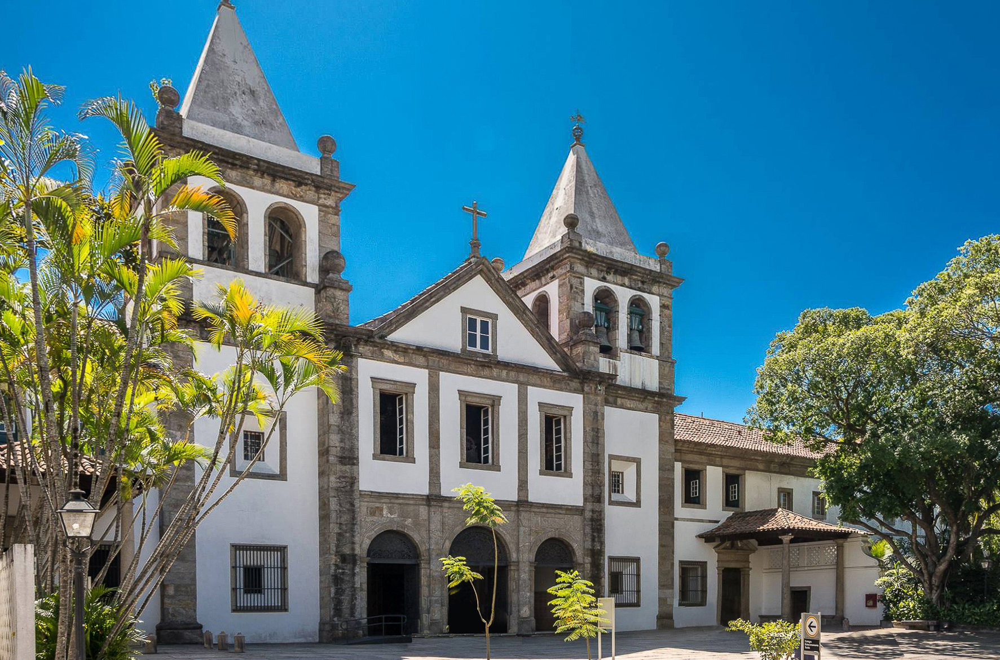

SUA PRÓXIMA VIAGEM:
Conheça o Rio de Janeiro

PARA OS AMANTES DE LAZER:
Conheça 3 destinos imperdíveis no Rio de Janeiro
As atrações do Rio de Janeiro vão desde praias mundialmente famosas com areia dourada e mar azul até montanhas cobertas de mata atlântica que emolduram a cidade. Esta cidade litorânea tem muitas coisas para fazer o ano todo, as famílias podem passar o tempo à beira-mar em Copacabana e Ipanema, os compradores podem explorar bairros vibrantes como Ipanema e Lapa, e os amantes da natureza podem desfrutar de longas trilhas até mirantes panorâmicos como o Pão de Açúcar e o Corcovado.

1. Cristo Redentor
O Cristo Redentor é uma estátua Art Déco de Jesus Cristo, com 38 metros de altura, localizada no topo do morro do Corcovado, no Rio de Janeiro. Inaugurada em 1931, é um dos principais símbolos do Brasil e uma das Sete Maravilhas do Mundo Moderno. De lá, é possível ter uma vista panorâmica de toda a cidade, incluindo praias, o Pão de Açúcar e a Floresta da Tijuca.
Bom para:
- Familia
- fotografia

2. Mosteiro de São Bento
O Mosteiro de São Bento é um dos mais importantes monumentos históricos e religiosos do Rio de Janeiro. Fundado em 1590, o mosteiro é conhecido por sua arquitetura barroca impressionante, com detalhes ornamentados e uma rica decoração interna. Além de ser um local de culto, o mosteiro também oferece visitas guiadas, permitindo que os visitantes explorem sua história e arte sacra.
Bom para:
- Religiosos
- historia
- arquitetura

3. Parque Municipal de Grumari
O Parque Natural Municipal de Grumari é uma área de preservação ambiental na Zona Oeste do Rio de Janeiro, com cerca de 800 hectares de restinga e Mata Atlântica preservadas. Criado em 2001, abriga praias intocadas e uma rica biodiversidade, com quase 270 espécies de aves registradas.
Bom para:
- Familia
- Natureza